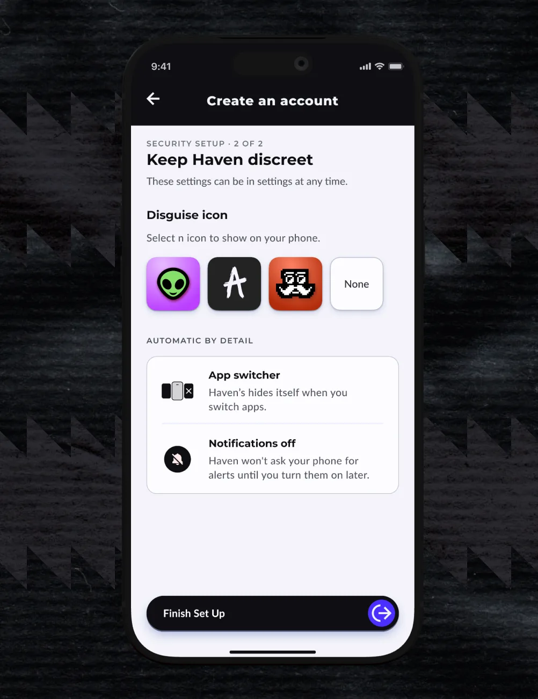
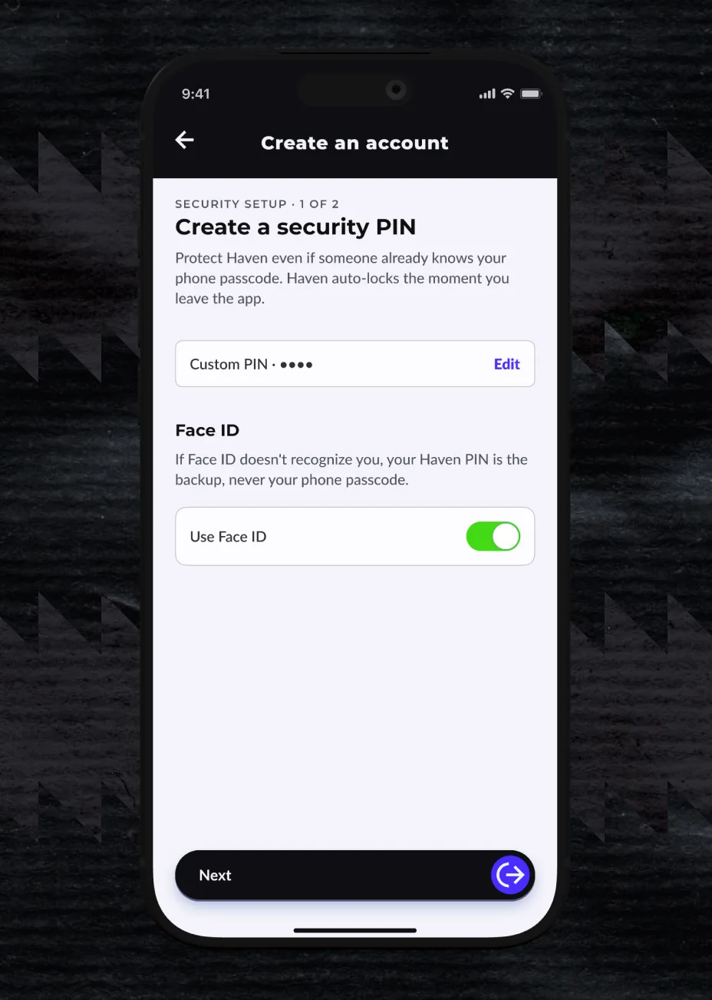

Chat-based interactions
When speaking out loud is not safe or private, the interaction itself has to lower the barrier to asking for support.
The final concept uses text-based sessions, not voice or video, so users can engage without speaking sensitive information aloud. A bounded chat format gives users more control over when and how much they share, responding directly to concerns about being overheard.
Security features
Privacy is a condition for access. Users need safeguards that protect the app before, during and after a conversation.
- Interview insight 5
- Testing insight 3


Interviews showed that discovery by guardians or peers could stop someone from using Haven at all, and testing showed the early concepts did not communicate enough protection. The final setup disguises the app icon, hides Haven in the app switcher, keeps notifications off until the user turns them on and adds a security PIN with Face ID. Privacy is visible when users need it, not buried in a later settings screen.